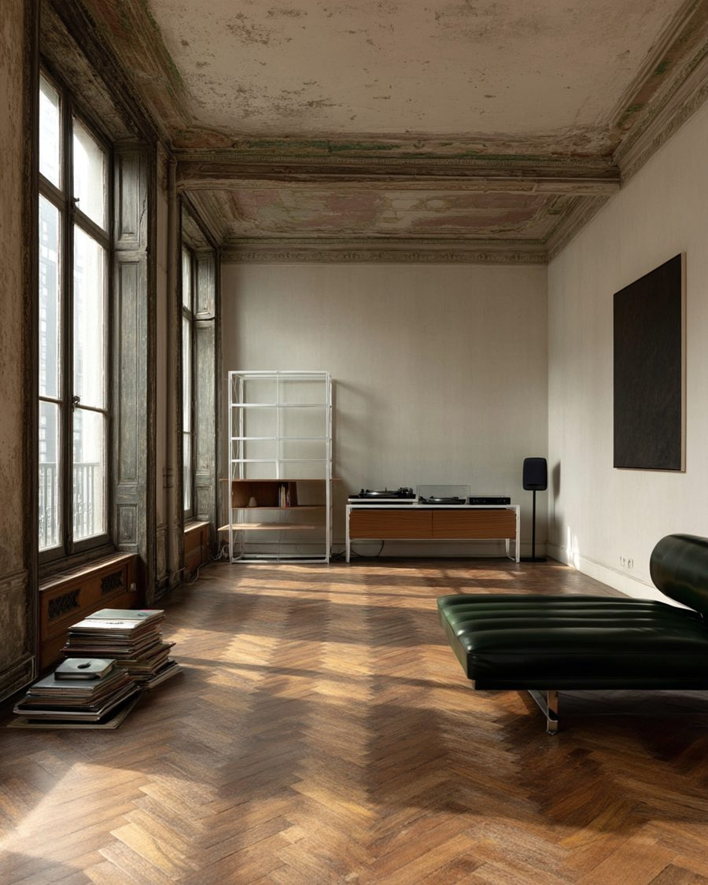
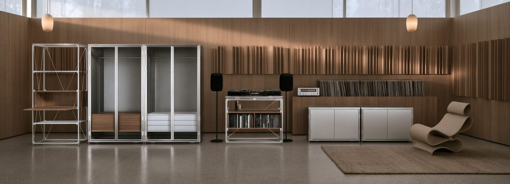
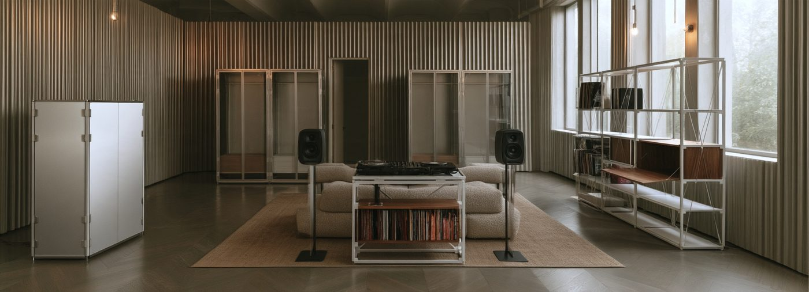
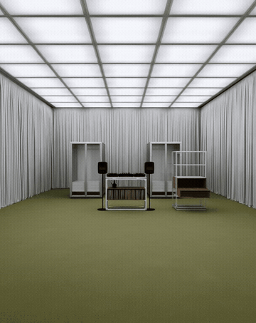
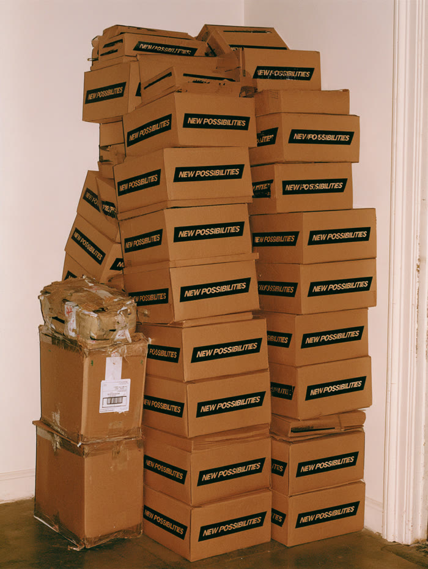
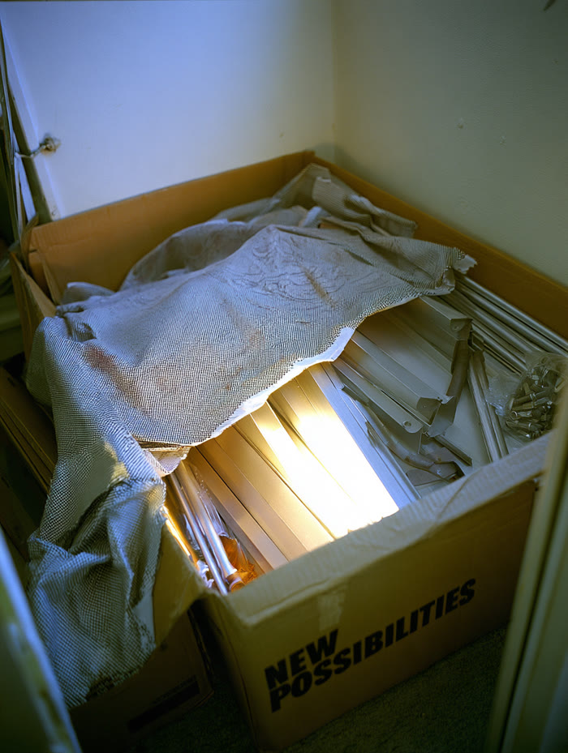
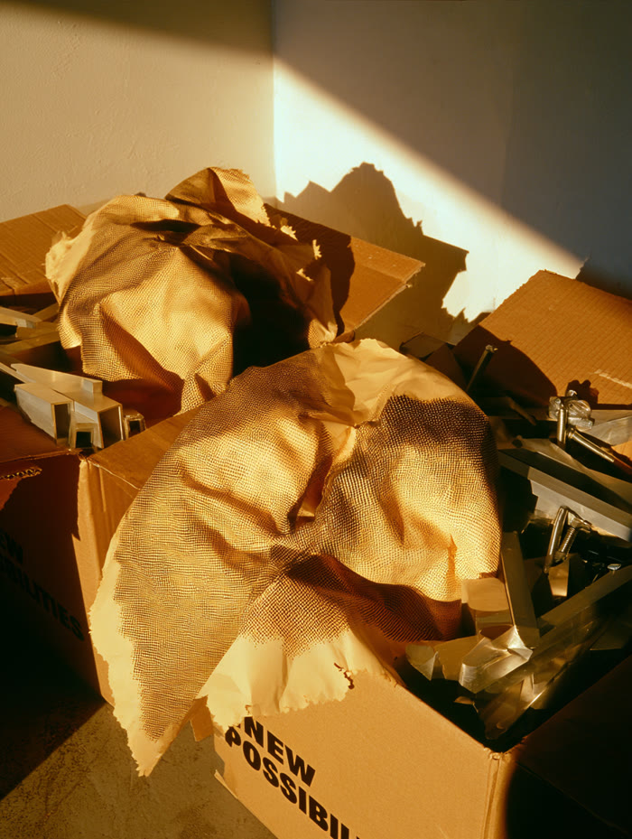
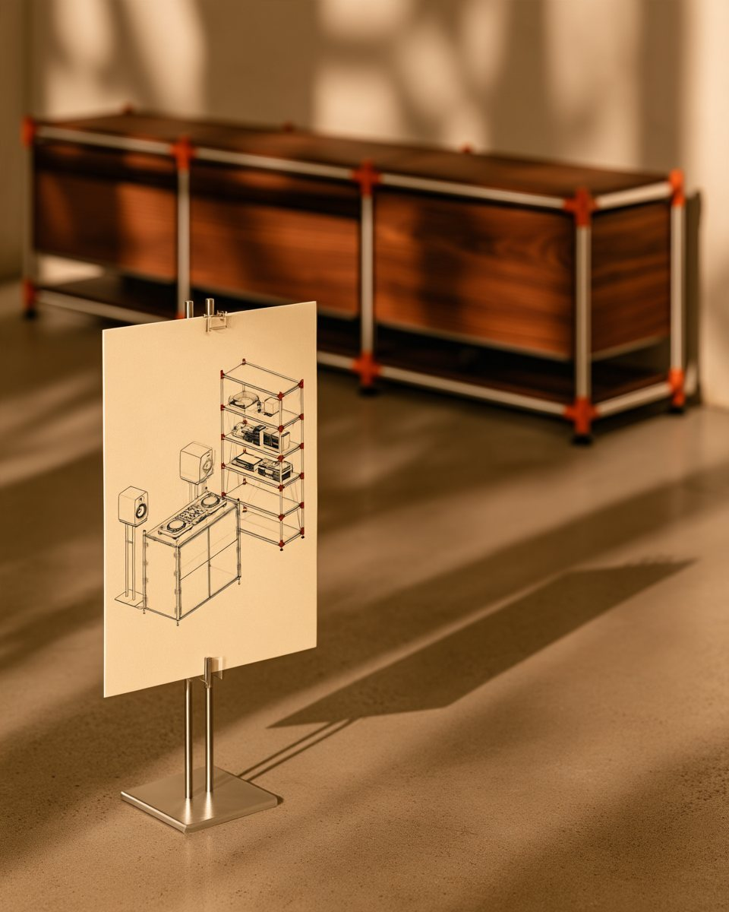

How could AI give strategists more to think with?
How could one strategy become an adaptive system?
What happens when designers get an exploration layer?
In: a 30-page founder deck, prototype photos, material samples.
In: modular furniture brands, concept store editorials, RED notes on home studios and listening setups.
Illustrative map · competitor types, not verified positions
AI drafted six tensions from the brief and the intelligence map. One was chosen, because it is the only one the product itself resolves.
The same parts, rebuilt for three creative lives. The AI expanded the idea into a matrix, and automation turned each cell into an asset brief in EN / 繁中 / 简中.
| Setup | RED | ||
|---|---|---|---|
| DJ booth | "My booth build" guide | Rebuild timelapse | Configurator preset |
| Listening wall | Vinyl + amp setup guide | Night session reel | Configurator preset |
| Collector's display | Shelf-styling guide | Before / after | Configurator preset |








| Task | AI proposes | Automation moves | Human decides | Human owns |
|---|---|---|---|---|
| Research & monitoring | ||||
| Pattern detection | ||||
| Insight & positioning | ||||
| Campaign idea | ||||
| Copy & localisation | ||||
| Visual exploration | ||||
| Art direction | ||||
| Format adaptation | ||||
| Client relationship & accountability |